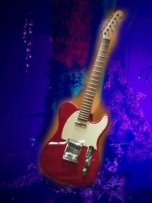

Electric Guitar
An electric guitar is a guitar that produces sound by vibrating strings over a pickup that converts the vibrations into electrical signals. Those signals are fed into an amplifier, which projects the musical performance at a wide range of volumes.
Would I ever use an Electric Guitar? Probably not, but it would be cool to have one.